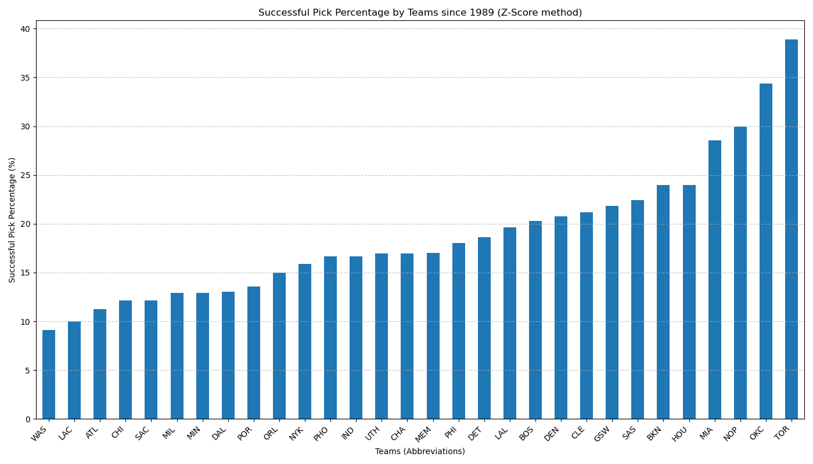
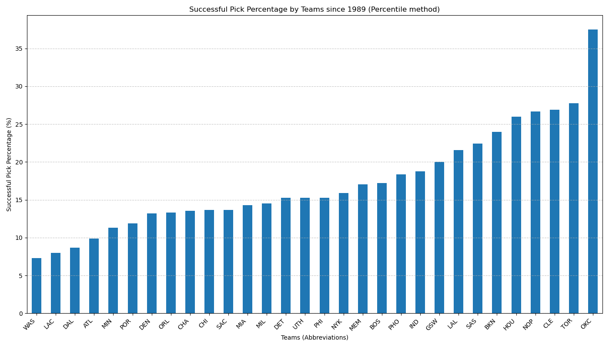

This dashboard displays the success rate of draft picks by different NBA teams since 1989.
Source code for dashboard and algorithms
Hi! We're Pushpesh and Atai. As avid OKC Thunder fans, we have watched our team reach great successes through adding talent
from the NBA Draft, which allows teams to select exciting young players each year following the season. Seeing how teams can
flourish by drafting well, we became curious on which teams were the 'best' at drafting. And using data, we decided to figure it out!
To determine successful draft picks, we first compiled draft data from various teams by reading multiple CSV files containing each team's draft data
and adding a team identifier to each dataset. After reading these files into their respective DataFrames, we then merged these datasets into a single comprehensive DataFrame.
When cleaning the data, here are some parameters that we established:
We calculated z-scores for these metrics within each draft year and draft position to normalize the performance data. Weighted scores were then computed for each player based on these z-scores, with specific weights assigned to each metric and z-score category. A threshold was set for determining success, with players whose weighted scores exceeded 0.7 deemed successful draft picks. Finally, we identified and listed the successful picks, dividing each team's successful picks by their total draft picks, and plotting this success percentage.
The following bar chart shows the success rate of draft picks by team using this methodology:
Our methodology for identifying successful picks combined two criteria: (1) players whose VORP, WS, and BPM values exceeded the median plus 1.25 times the standard deviation for their draft year, and (2) players whose percentile ranks for these metrics were above 70% both within their draft year and their draft position. Players meeting either criterion were considered successful. We then identified and listed the successful picks, dividing each team's successful picks by their total draft picks, and plotting this success percentage.
The following bar chart shows the success rate of draft picks by team using this methodology:
Our project yielded several interesting findings. Our inner OKC superfans were validated, as in both techniques, we saw that our Thunder placed top 2 in successful pick percentage (SPP). In fact, we were happy to see that the top 5 teams by SPP computed using each of our methods respectively were composed of nearly the exact same teams. By having two measures of SPP that both yielded nearly the same results, we were able to confirm that there did not seem to be too much variability in the results, strengthening each individual finding. We hope to look upon our SPP graphs leading up to each annual NBA Draft as we use our custom tool to make informed predictions on the success of future NBA Draft picks.